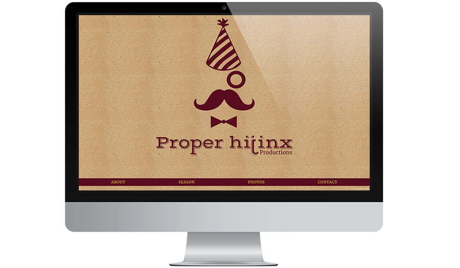
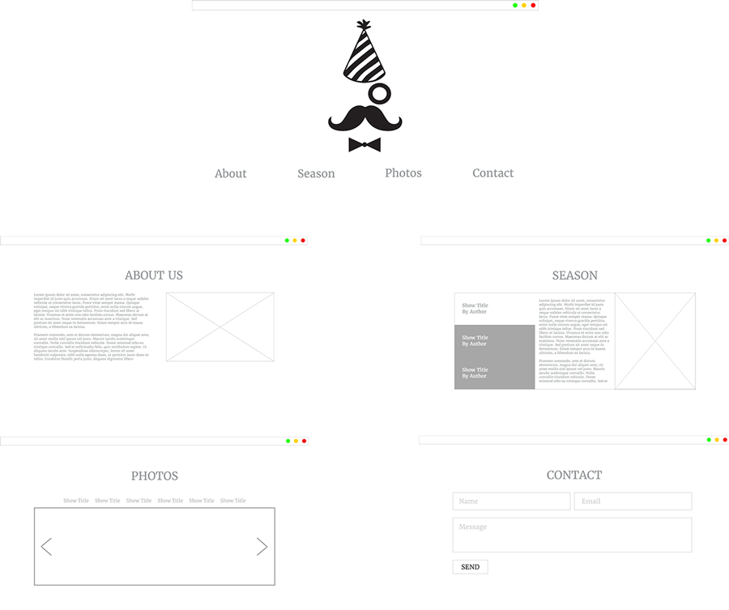
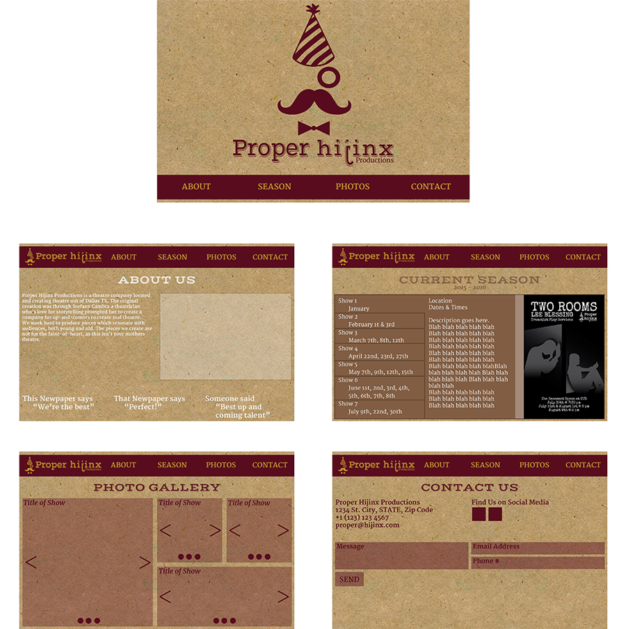
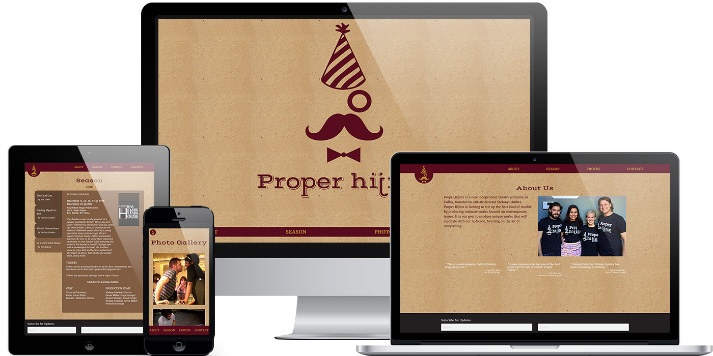

Proper Hijinx Website
Client:
Proper Hijinx Productions
Project Type:
Website Design / Development
Role:
Interaction Designer / Developer
Link:
www.properhijinx.com
Proper Hijinx Productions is an independent theatre company in Dallas TX, founded by artistic director Stefany Cambra in late 2015. Their goal is to produce unique works that will resonate with the audience, focusing on the art of storytelling. Proper Hijinx Productions also advocates for growth in the theatre community by attending as many outside productions as possible. Stefany, approached to me to create a website design that appealed to their audience of Dallas Theatre-goers as well as potential performers. The website needed to be simple, editable, and extremely user friendly.
Being the new group in town, Proper Hijinx wanted to emphasis brand over content, and continues to utilize image over text, as a mean to establish a memorable presence in all of their marketing. It was launched on October 26th, 2015 and since that time the company’s performances have been reviewed by numerous critics and their artistic director has been featured in the press even more. As of January 2017, the website is averaging about 50 new visitors a day. In 2016, Proper Hijinx was called the ‘next up-and-coming theatre’ of the Dallas/Ft. Worth area.
From the design of the logo to the website, Stevie has been indispensable to the formation of Proper Hijinx.Stefany Cambra, Artistic Director